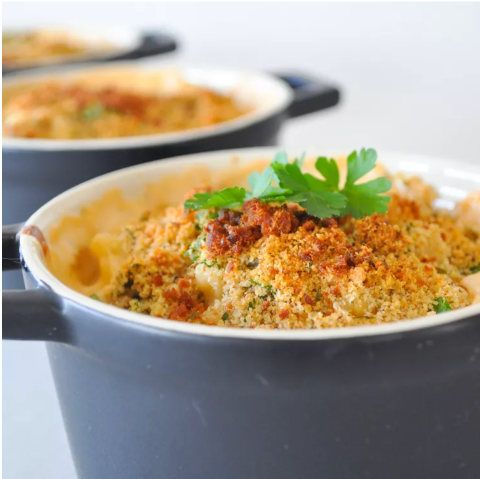

Home Style Macaroni and Cheese

Description
Cheesy Cheddar and cream cheese sauce with a touch of Dijon over Macaroni pasta and topped with bread crumbs.
Ingredients
- 7 ounces macaroni
- 1/4 cup butter
- 3 tablespoons all-purpose flour
- 2 cups milk
- 1 (8 ounce) package cream cheese
- 1/2 teaspoon salt
- 1/2 teaspoon black pepper
- 2 teaspoons Dijon mustard
- 1 cup dry bread crumbs
- 2 tablespoons butter
- 2 tablespoons choppped parsley
Steps
- Preheat oven to 400 degrees F (200 degrees C).
- Bring a large pot of lightly salted water to a boil. Add macaroni pasta and cook for 8 to 10 minutes or until al dente; drain.
- In a 3 quart saucepan over medium heat, melt butter and stir in flour. Cook for about 1 minute, until smooth and bubbly; stirring occasionally. Mix in milk, cream cheese, salt, pepper, and Dijon mustard. Continue cooking until sauce is thickened. Add cooked macaroni and Cheddar cheese.
- Pour into 2 quart casserole dish. In small bowl mix together bread crumbs, butter and parsley; spread over macaroni and cheese. Bake for 15 to 20 minutes or until golden brown and heated through.
Back to Main Page